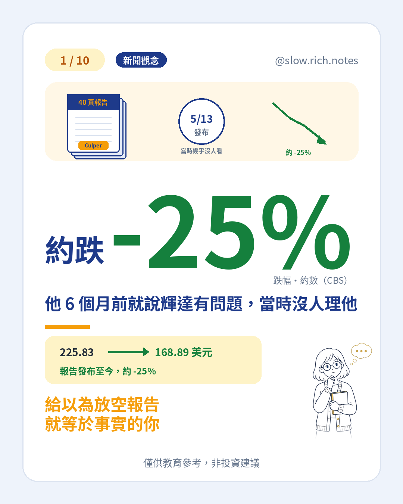

一份沒人看的報告
2026 年 5 月 13 日，31 歲的 Christian Lamarco 發布一份 40 頁報告。他是放空機構 Culper Research 的創辦人，平常研究的是冷門小公司，這次挑上全世界最熱門的輝達。報告第一句話就寫：「我們放空輝達，只有一個原因——它有重大的中國問題。」
發布那天，黃仁勳正跟著美國總統川普搭空軍一號飛往北京，輝達股價隨後創新高。這份報告，起初幾乎沒人注意。
報告說了什麼
Culper 的主要指控是：輝達表示 2025 年 4 月美國出口限制後，中國業務已經「歸零」；但 Culper 估計，輝達 FY2026 的算力營收仍有 2 成以上與中國需求有關，管道是東南亞中間商，重點點名新加坡的 Megaspeed。報告也寫，黃仁勳與 Megaspeed 的 Alice Huang（黃樂）關係「親密得令人不安」，並附上兩人在聚會、用餐場合同框的照片。
他們的查法包括訪問輝達前員工、翻閱新加坡與馬來西亞的公司登記、追蹤貿易紀錄，甚至分析一段在台灣麵店外拍到的 YouTube 影片。以上都是 Culper 的指控與估計，不是官方調查結論。
6 個月後，報告突然瘋傳
11 月，黃仁勳公開承認婚外情，董事會啟動獨立調查（詳見黃仁勳風波與北士科）。媒體報導對象就是黃樂，並報導美方懷疑她與中國情報單位有關，中國外交部已否認。那份舊報告於是被翻出來瘋傳。
Lamarco 受訪時說：「有時候，人們會在意你說的話；有時候不會。這次，他們是 6 個月後才開始在意。」根據 CBS 報導，輝達股價從報告發布當天的 225.83 美元，跌到 11/10 的 168.89 美元，約 -25%。
新手要懂：放空報告是「有立場的研究」
放空，是借股票來賣、等股價跌了再買回來，所以放空的人是股價下跌才賺錢。這代表放空報告天生帶有立場：可能挖到真問題，也可能誇大。這次的報告其實從沒提到婚外情，只說關係很近；Lamarco 也不願透露獲利多少、是否仍持有空單。
看到放空報告，先問 3 件事
- 證據能不能被第三方查證？例如官方文件、主管機關調查、可靠媒體的獨立報導。
- 公司怎麼回應？有沒有具體反駁，還是迴避？
- 我是不是因為一份報告就急著追殺或抄底？
一份報告可以讓你多想一層，但不該替你做決定。想了解 AI 公司還有哪些財報外的風險，可以看AI 表外算力承諾。